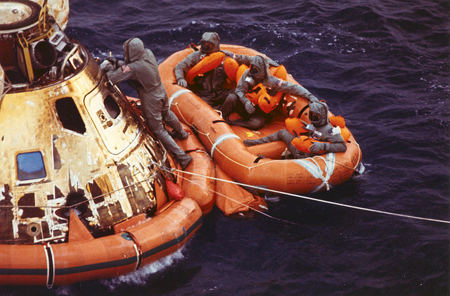

Amateur Erlang
am·a·teur noun \ˈa-mə-(ˌ)tər, -ˌtu̇r, -ˌtyu̇r, -ˌchu̇r, -chər\
- devotee, admirer
- one who engages in a pursuit, study, science, or sport as a pastime rather than as a profession
Bowling Elegantly
score(Rolls) -> frame(Rolls, 1, 0).
%% Game complete.
frame(_BonusRolls, 11, Score) -> Score;
%% Strike.
frame([10|Rest], Frame, Score) ->
frame(Rest, Frame + 1, Score + 10 + strike_bonus(Rest));
%% Spare.
frame([First,Second|Rest], Frame, Score) when (First + Second == 10) ->
frame(Rest, Frame + 1, Score + 10 + spare_bonus(Rest));
%% Normal.
frame([First,Second|Rest], Frame, Score) ->
frame(Rest, Frame + 1, Score + First + Second).
%% spare & strike bonus calculations.
spare_bonus([First|_Rest]) -> First.
strike_bonus([First,Second|_Rest]) -> First + Second.

Syntax
-module(my_module).
my_func([]) ->
Value = get_default_value(), % comma
Response = case other_func(Value) of
ok -> "We're good!"; % semicolon
_ -> "Oh noes!" % nothing!
end, % comma
{Response, Value}; % semicolon
my_func([Value]) ->
{"We're good!", Value}; % semicolon
my_func(Values) ->
IncDbl = fun (X) ->
Inc = X + 1, % comma
Inc * 2 % nothing!
end, % comma
Value = lists:map(IncDbl, Values), % comma
{"We're good!", Value}. % period
Recursion
Recursion
%% beginning
func(Input) ->
Output = [],
func(Input, Output).
Recursion
%% beginning
func(Input) ->
Output = [],
func(Input, Output).
%% end
func([], Output) -> lists:reverse(Output).
Recursion
%% beginning
func(Input) ->
Output = [],
func(Input, Output).
%% end
func([], Output) -> lists:reverse(Output).
%% middle
func([First | Rest], Output) ->
NewFirst = munge(First),
func(Rest, [NewFirst | Output]);
Recursion
lists:map(fun my_module:munge/1, Input)
More OO than OO
loop(State) ->
receive Message ->
NewState = handle_message(Message, State),
loop(NewState)
end.
More OO than OO
loop(Id) ->
receive
{FromPid, next} ->
NewId = Id + 1,
FromPid ! NewId,
loop(NewId)
end.
More OO than OO
loop(Id) ->
receive
{FromPid, next} ->
NewId = Id + 1,
FromPid ! NewId,
loop(NewId)
end.
init() ->
Pid = spawn(fun() -> loop(0) end),
Pid ! {self(), next},
Id = receive Resp -> Resp end.
More OO than OO
1> file:open("test.txt", [write]).
{ok,<0.35.0>}
More OO than OO
gen_server, gen_event, gen_fsm, …
Scripting
#!/usr/local/bin/escript
main(Args) ->
io:format("Hello world!~n\t~p~n", [Args]).
Scripting
#!/usr/local/bin/escript %%! -sname my_script
Scripting
#!/usr/local/bin/escript
main([Url]) ->
inets:start(),
{ok, {{_Proto, Code, _Desc}, _Hdr, Content}} = httpc:request(Url),
io:format("Response (~p):~n~s~n", [Code, Content]).
Web Service Fakery
-module(my_web_service).
-behaviour(spooky).
-export([init/1, get/2]).
init([])-> [{port, 8000}].
get(Req, []) ->
Req:ok("Default response");
%% http://localhost:8000/path/to/resource
get(Req, ["path", "to", "resource"]) ->
Req:ok("Canned response for resource");
get(Req, ["path", "to", "other-resource"]) ->
Req:ok("Canned response for other resource");
get(Req, ["path", "to", SomethingElse]) ->
Req:ok(io_lib:format("Canned response for ~p", [SomethingElse])).
Web Apps
- Spooky
- ChicagoBoss
- WebMachine